Installation serveur DNS sous Linux Debian 10
Configuration :
Serveur dhcp-1 : debian 10
Serveur dns-2 : debian10
Client win10 : windows 10
Domaine : m2i.lan
Plan d’adressage :
Adresse du réseau : 192.168.74.0/24
Adresse du serveur dhcp-1 : 192.168.74.140
Adresse du serveur dns-2 : déterminée par dhcp-1
Adresse du client win10 : déterminée par dhcp-1
Les manipulations seront effectuées avec un compte utilisateur avec les droits sudoers (olivier)
Dhcp-1 et dns-2 étant des serveurs nous prendrons la main dessus via putty
Configuration du fichier /etc/hosts
Sudo nano /etc/hosts
A la ligne 127.0.1.1 ajouter le nom du server : ici dns-2
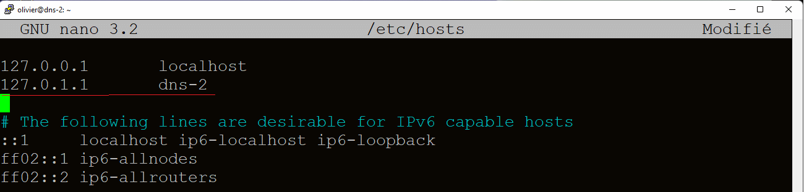
Installation du service bind9
Tout d’abord vérifier que le système est à jour
Sudo apt-get update
installation su service bind9
Sudo apt-get install bind9
Configuration du service bind9
sauvegarder le fichier que nous allons modifier named.conf.local :
Sudo cp /etc/bind/named.conf.local /etc/bind/named.conf.local .saved
Le fichier /etc/bind/named.conf.local est copié dans le fichier /etc/bind/named.conf.local.saved
éditer et modifier le fichier /etc/bind/named.conf.local
Sudo nano /etc/bind/named.conf.local
Déclaration de la zone de recherche
zone "m2i.lan" zone « nom.de.domaine »
type master zone de recherche principale
file "/etc/bind/db.m2i.lan" fichier de configuration (db = database)
texte à modifier :
zone "m2i.lan" {
type master;
file "/etc/bind/db.m2i.lan";
};
Déclaration de la zone de recherche inversée
Zone "74.168.192.in-addr.arpa" zone « adresse-réseau-moins-dernier-bit.in.addr-arrpa »
type master zone de recherche principale
file "/etc/bind/db.74.168.192.in-addr.arpa fichier de configuration
texte à modifier :
zone "74.168.192.in-addr.arpa" {
type master;
file "/etc/bind/db.74.168.192.in-addr.arpa";
};
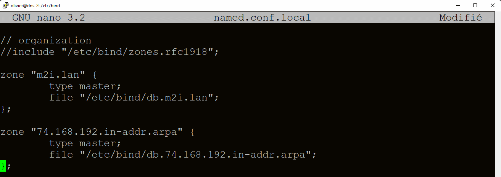
Editer et modifier le fichier named.conf.options
Configurer le serveur de nom qui sera interrogé si dns-2 ne connait pas
Sudo nano /etc/bind/named.conf.options
Décommenter la ligne forwarders et entrer l’adresse 8.8.8.8
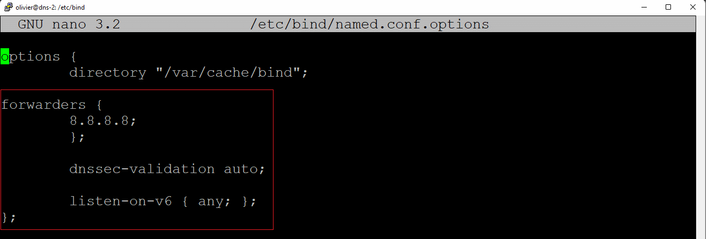
Création et configuration des fichiers db
Db.m2i.lan
Copie du fichier /etc/bind/db.local qui va nous servir de base et le renommer en db.m2i.lan
Sudo cp /etc/bind/db.local /ect/bind/db.m2i.lan
Configuration de db.m2i.lan
Sudo nano /etc/bind/db.m2i.lan
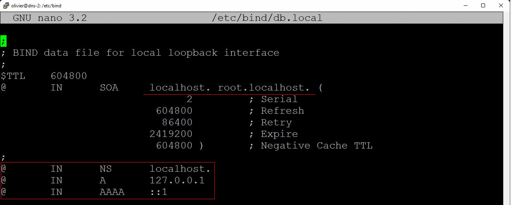
@ IN NS « nom serveur.nom domaine. »
dns-2 IN A « @IP dns-2»
dhcp-1 IN A « @IP dhcp-1»
NS = Name server
A = hôte ipv4
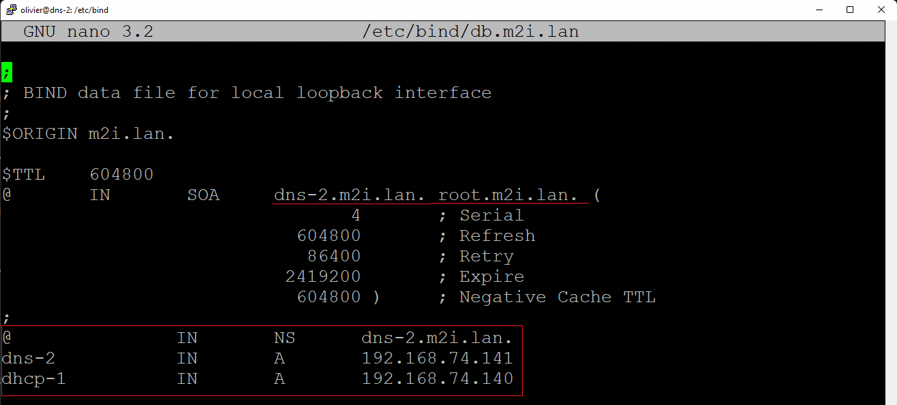
db.74.168.192.in-addr.arpa
copie du fichier /etc/bind/db.127 et le renommer en db.74.168.192.in-addr.arpa
sudo cp /etc/bind/db.127 /etc/bind/ db.74.168.192.in-addr.arpa
edition et modification de db.74.168.192.in-addr.arpa
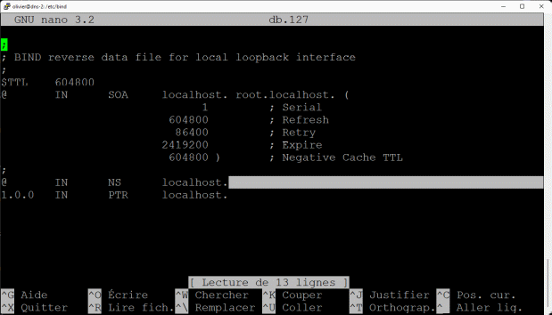
sudo nano /etc/bind/db.74.168.192.in-addr.arpa
ajouter la ligne $ORIGIN 74.168.192.in-addr.arpa.
Modifier la ligne @ IN SOA « nom serveur.nom domaine. » root. « nom domaine».
modifier les 3 dernières lignes
@ IN NS « nom serveur.nom domaine. » root. « nom domaine».
« dernier bit @ip » IN PTR « nom serveur.nom domaine. »
« dernier bit @ip » IN PTR « nom serveur.nom domaine. »
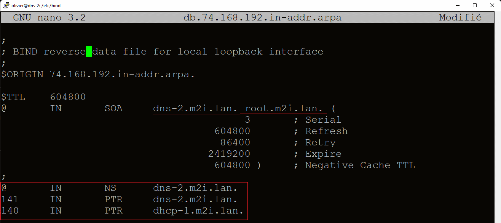
Edition de /etc/resolv.conf
Sudo nano /etc/resolv.conf
Modifier les champs
Domain : « nom de domaine »
Search « nom de domaine »
Name server : « @IP dns »
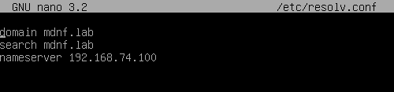
Tests
Redémarrer dns-2 : Sudo reboot
Test de connexion : ping « nom du serveur » ici : Ping dhcp-1
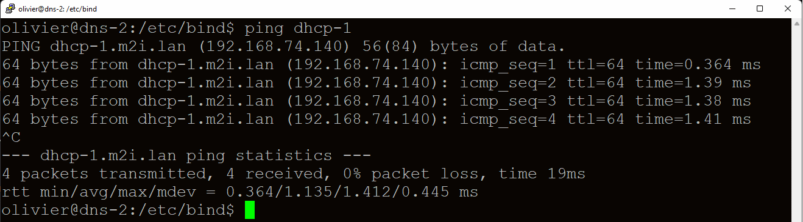
Dhcp-1 (192.168.74.140) répond : le nom est bien résolu
Depuis le client win 10
Configurer le serveur dns du client comme étant dns-2
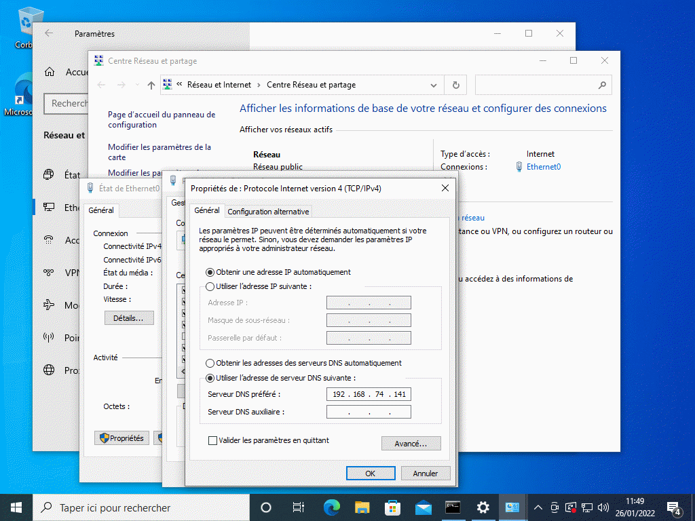
Il suffit d’entrer l’adresse de dns-2 (192.168.74.141) dans le champ serveur DNS préféré
Ouvrir une invite de commande (win+r cmd)
Ping « nom du serveur » ici : ping dhcp-1.m2i.lan (ici : nom complet)
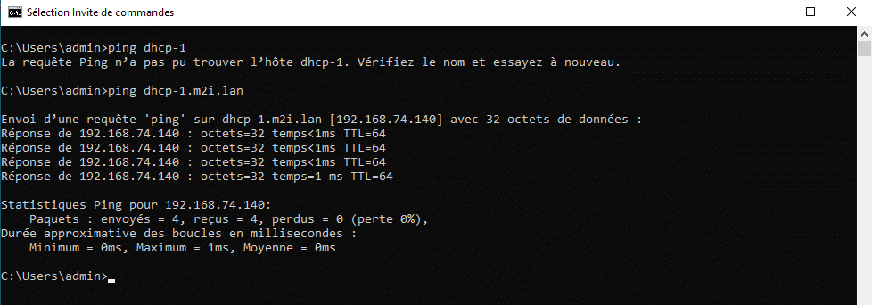
Le nom est bien résolu.
Le test ultime !
Enlever le dns fixe du client win10 et le redémarrer
Configurer dns-2 comme étant le dns du réseau sur dhcp-1
Sur dhcp-1 :
Sudo nano /etc/dhcp/dhcpd.conf (éditer le fichier de conf)
Décommenter option domain-name et déclarer le domaine « nom domaine »
Ici : m2i.lan
Remplacer la ligne :
Option domain-name-servers 8.8.8.8.
Par :
Option domain-name-servers « adresse du dns »
Ici :
Option domain-name-servers 192.168.74.141
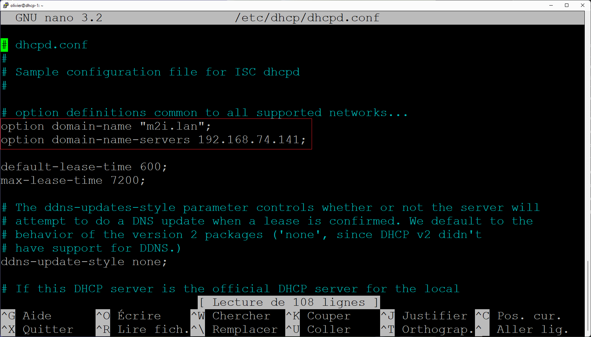
Redémarrer la machine : sudo reboot
Retourner sur le client win10
Vérifier qu’il n’y a pas d’adresse de DNS préféré
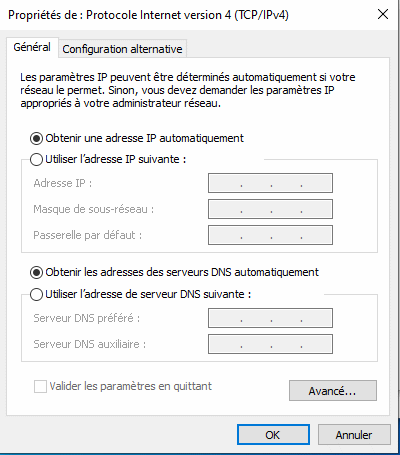
Ouvrir une invite de commande
Renouvellement de l’adresse IP
Ipconfig/all (pour vérifier)
Ipconfig /release
Ipconfig/renew
Ipconfig /all (pour vérifier)
ping « nom du serveur »
Ici :
Ping dhcp-1.m2i.lan
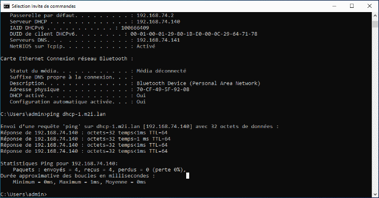
Le serveur répond : le nom est résolu !
Congratulations !
Dépannage : regarder les fichiers /etc/resolv.conf :
domain m2i.lan
search m2i.lan
nameserver : @ipdns : 192.168.74.141